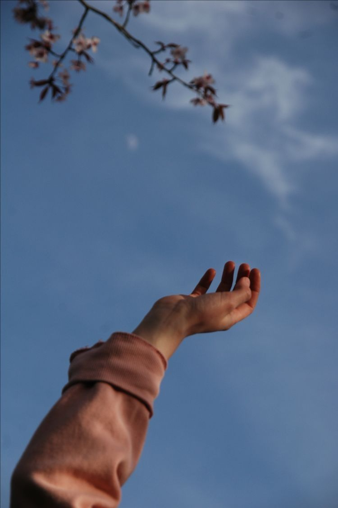

Personal Portfolio
Homepage |
Biodata |
Portfolio |
Experience |
Contact Me |
My Portfolio
- Look Up & He Will Show You The Way -

After highschool, i got selected to joined a camp for 3 months in PLKN Princess Haliza in Sepang back in 2014.
I've learnt how to survive a night in the forest with limited supply. I also learn shooting and swimming.
Become more tougher and braver right after i joined the camp.
Work at a fine dining restaurant in Subang Jaya in 2016-2017.
I gain a lot of knowledge and experience of how to serve and dealing with customer, handle large booking for events or gathering.
Making sure the customer are satisfied with the service to keep a good name of the restaurant.
I received a certificate for being the best employee.
Got offer to study in UiTM Jengka, Diploma in office Management & Technology in 2017 and graduate in 2020.
During diploma year, i manage to get knowlegde of microsoft and typing skills.
Next